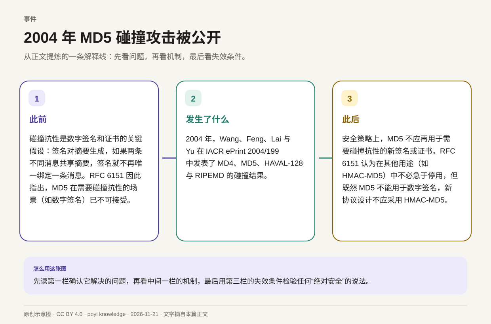

原理与机制
事件：2004 年 MD5 碰撞攻击被公开（The 2004 MD5 collision attack）。2004 年，Wang、Feng、Lai 与 Yu 在 IACR ePrint 2004/199 中发表了 MD4、MD5、HAVAL-128 与 RIPEMD 的碰撞结果。RFC 6151 记载，这是首次展示 MD5 两组碰撞对的论文；详细攻击技术随后在 EUROCRYPT 2005 由 Wang 与 Yu 发表。本文讨论的是 2004 年事件与 MD5 碰撞结果，不是 MD5 算法本身的完整规范。MD5 输出 128 位摘要，按 512 位块处理。2004 年结果的意义在于给出了可验证的碰撞对，而不是只给出理论估计。演示页给出的两条消息各 128 字节，MD5 都是 79054025255fb1a26e4bc422aef54eb4，但字节内容不同。这里的碰撞对是具体消息；本批次用 MD5 教学实现和 Node/OpenSSL 复算这一对。它验证的是碰撞实例，不是原像攻击，也不代表 2004 年论文的搜索过程可以在所有环境下复现。

为什么重要
碰撞抗性是数字签名和证书的关键假设：签名对摘要生成，如果两条不同消息共享摘要，签名就不再唯一绑定一条消息。RFC 6151 因此指出，MD5 在需要碰撞抗性的场景（如数字签名）已不可接受。2004 年结果的重要性在于它从理论攻击推进到公开的具体碰撞对，并直接推动了 MD5 的退役建议。它不是MD5 已经能被任意原像的声明；碰撞、第二原像和原像必须分开。
应用与实例
安全策略上，MD5 不应再用于需要碰撞抗性的新签名或证书。RFC 6151 认为在其他用途（如 HMAC-MD5）中不必急于停用，但既然 MD5 不能用于数字签名，新协议设计不应采用 HMAC-MD5。本文只讨论 2004 年 MD5 碰撞事件及其影响，不把 MD5 算法实体、SHA-1 事件或 2005 年详细攻击论文并入本事件。
边界与攻击面
具体碰撞对：演示页的两条消息各 128 字节，MD5 都是 79054025255fb1a26e4bc422aef54eb4，但字节内容不同；这是可直接验证的碰撞实例。2004 与 2005：2004 年 ePrint 论文首次展示两组 MD5 碰撞对；2005 年 EUROCRYPT 论文给出差分路径、消息修改与碰撞搜索的详细技术。两者是同一攻击线的发表节点，但不是同一篇论文。碰撞不等于原像：2004 年结果是碰撞攻击，不是对任意摘要的原像攻击；碰撞、第二原像和原像的攻击模型不同。继续使用：RFC 6151 对 HMAC-MD5 的表述是不必急于停用，但新协议设计不应采用；这是 2011 年的建议，不是对 2004 年结果的追溯性否定。
历史与背景
- 1992 年：RFC 1321 发布 MD5。- 2004 年：Wang、Feng、Lai、Yu 在 ePrint 2004/199 发表 MD4/MD5/HAVAL-128/RIPEMD 碰撞结果；RFC 6151 称其首次展示两组 MD5 碰撞对。- 2005 年：Wang 与 Yu 在 EUROCRYPT 2005 发表 "How to Break MD5 and Other Hash Functions"，给出详细攻击技术（LNCS 3494，第 19-35 页）。- 2011 年 3 月：RFC 6151 更新 MD5 与 HMAC-MD5 的安全考虑。
逐步示例与核验
两条碰撞消息各 128 字节，MD5 都是 79054025255fb1a26e4bc422aef54eb4，但字节内容不同；本批次用 MD5 教学实现和 Node/OpenSSL 复算，结果一致。2004 年攻击利用了 MD5 的结构弱点；具体碰撞对的意义在于可独立验证，而不仅是复杂度估计。
参考出处
- Wikipedia search entry for 2004 年 MD5 碰撞攻击被公开. https://zh.wikipedia.org/w/index.php?search=2004%20%E5%B9%B4%20MD5%20%E7%A2%B0%E6%92%9E%E6%94%BB%E5%87%BB%E8%A2%AB%E5%85%AC%E5%BC%80
- A Brief History of Cryptology and Cryptographic Algorithms (Dooley, Springer 2013). https://link.springer.com/book/10.1007/978-3-319-01628-3